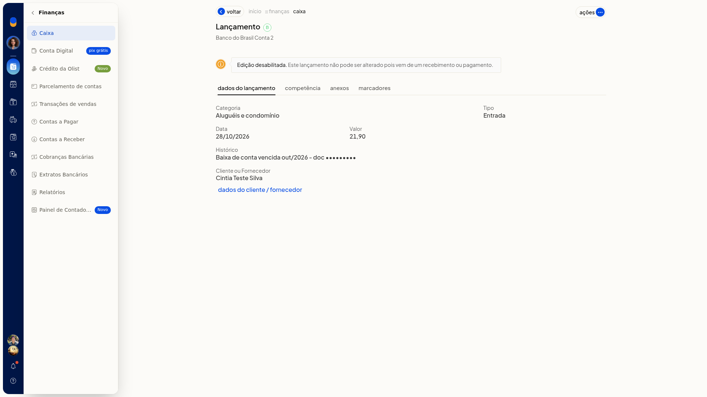

Por que o lançamento de baixa não pode ser alterado no Caixa
No Caixa do ERP da Olist, a baixa de uma conta a receber ou a pagar aparece como um lançamento da conta financeira. Você reconhece esse lançamento pelo histórico e pelo vínculo de Origem.
Esse lançamento não se corrige pela edição no Caixa. A alteração fica desabilitada porque o lançamento vem de um recebimento ou de um pagamento.
Pré-requisitos
- A baixa já precisa existir como lançamento na conta financeira do Caixa.
Importante
- Não há coluna de Status na consulta do Caixa, nem ação de Status no menu da linha do lançamento de baixa.
- A ficha de edição exibe a mensagem Edição desabilitada. Este lançamento não pode ser alterado pois vem de um recebimento ou pagamento.
Instruções
-
Acesse Finanças > Caixa.
-
Na conta financeira, localize o lançamento de baixa pelo histórico de baixa de conta vencida ou de liquidação de conta a pagar.
-
Abra o menu da linha do lançamento.

-
Clique em Editar.
-
Confira a mensagem de edição desabilitada, com as abas Dados do lançamento, Competência, Anexos e Marcadores, e clique em Voltar para retornar à lista, sem alterar nem salvar o lançamento.

Informações adicionais
O vínculo de origem mostra de onde veio a baixa
- O lançamento tem um controle de Origem, exibido como um ícone com a letra B.
- Para abrir o recebimento ou o pagamento, use esse controle. Não use a trilha do topo da página como caminho.
- Em uma baixa de conta a receber, Origem abre Recebimentos.
- Em uma liquidação de conta a pagar, Origem abre Pagamentos.
- Nessas listas, as colunas visíveis são Data, Histórico, Categoria e Valor. Não há coluna Status.